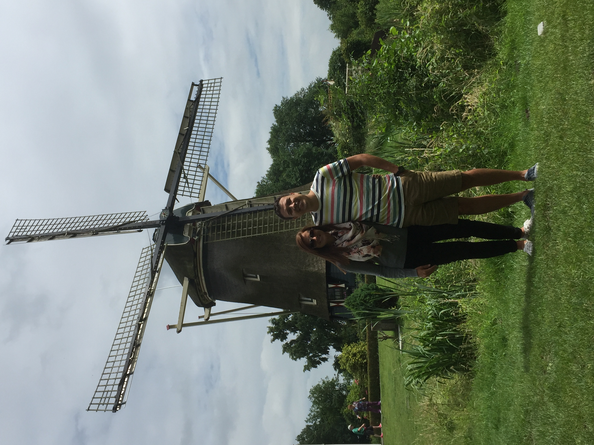
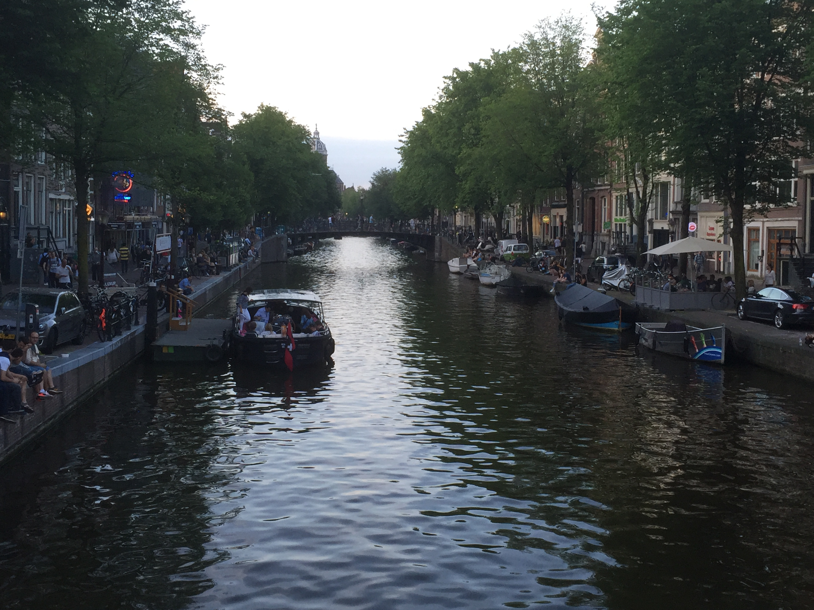
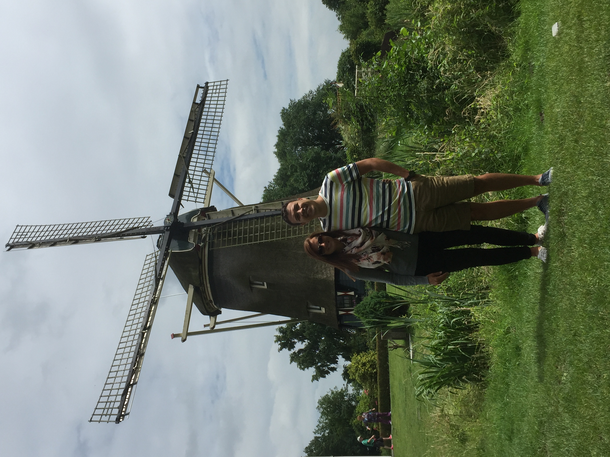
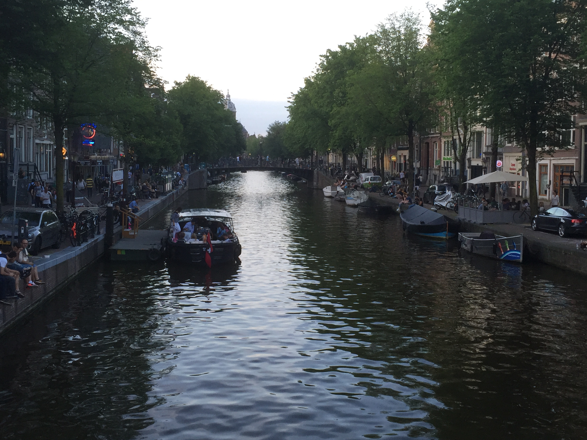
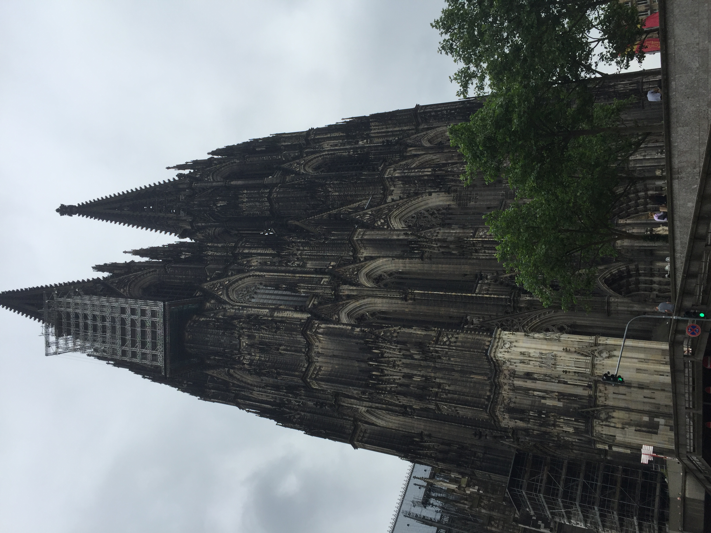
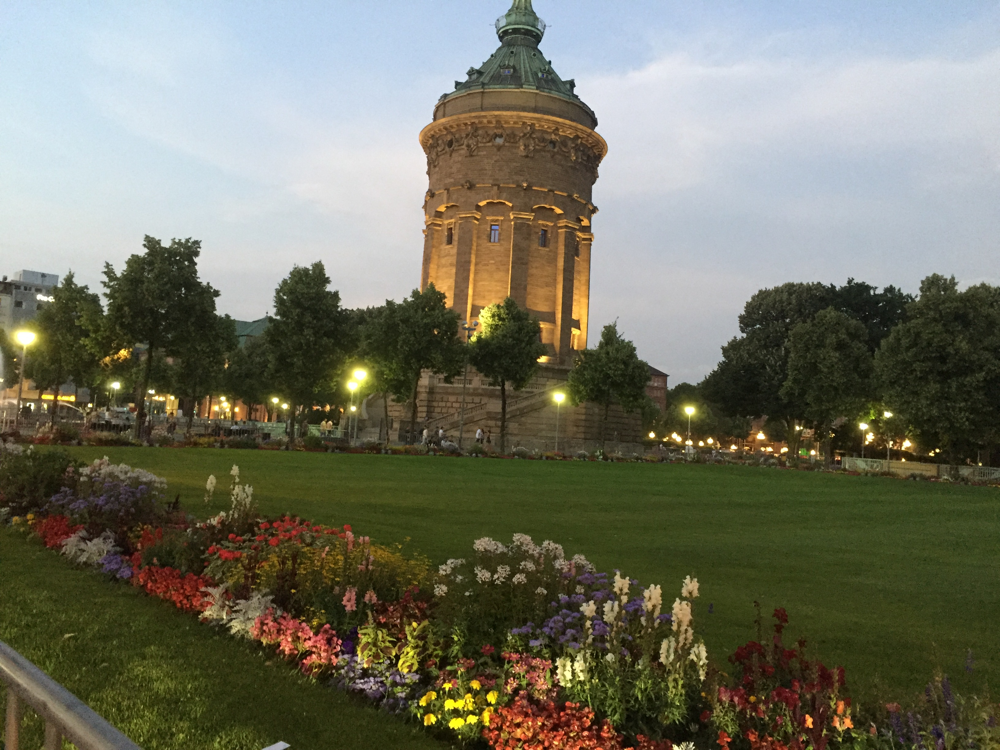
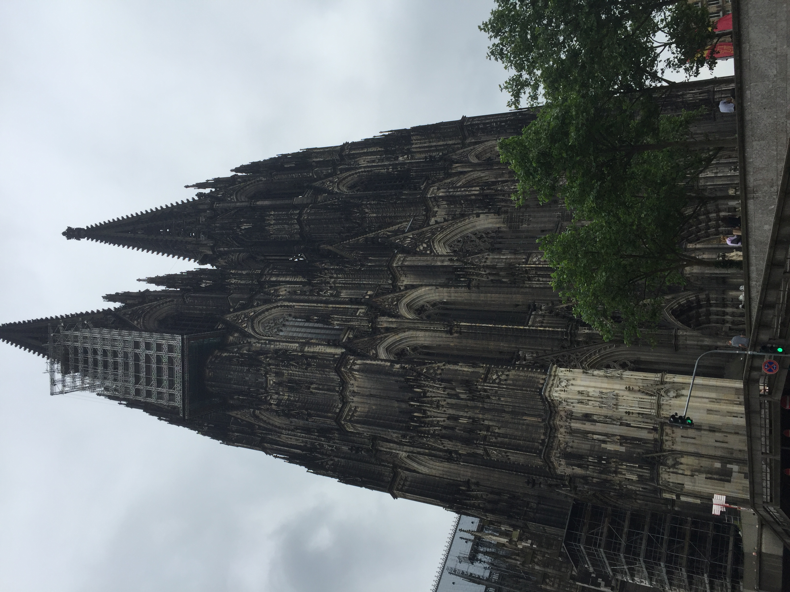
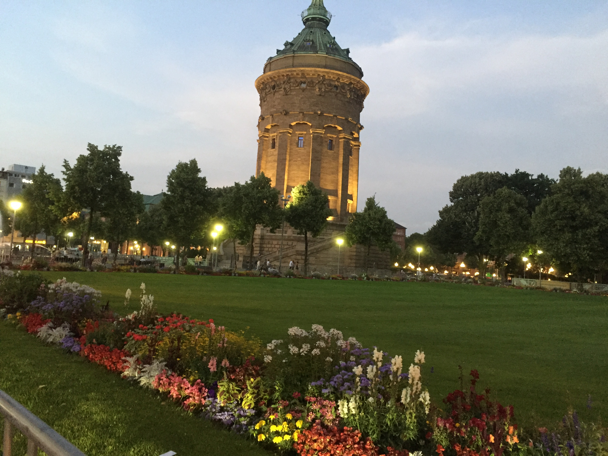

This is the journey of me exploring Europe for two weeks in 2016. If you ever get the opportunity to travel abroad, do it! Infact, make it happen. It is such an experience to see other cultures and to see the beautiful attractions. You get to meet new people and get out of your comfort bubble. Throughout Europe, I tried new types of food, scene epic views, learned different languages, experienced different lifestyles, and have the travel bug to see more of the world.
Originally we were suppose to fly to Atlanta to catch our connecting flight. Let's just say it did not go to according to plan. Our flight was the only one on the board that was delayed by multiple hours. This did not work as we hardly had any time between our flights. After waiting 10 hours in KCI, my group got very aggrevated and were not please with how Delta Airlines handled this situation. In order for us to get a flight out that day, it was like the scene in Home Alone. The lady worked her magic to get us seats on a flight to a city we weren't even suppose to go to and us running down the terminal to get on the plane that had already been waiting 20 minutes past its takeoff time just so we can could get on the flight. Let's hope she didn't lose her job! After that fiasco, it was at least neat to see a place I have never been before. We didn't get in until after 11:00 P.M. but it was amazing to see how busy the city still was. Seeing all the lights in Times Square, grabbing a New York slice, and trying to take the subway but after seeing all the rats, that was a no go.
Home of Big Ben, Fish & chips, and long live the Queen! So what is the first thing you do? Of course you go to the local pub for a pint. This was quite an experience as it was my first time out of the country. Even though they speak the same language, the culture is completly different.
Attractions Visited:
Oui Oui, the city of love. The architecture of this city is magnificent and nothing like I have seen before. One of the things I could not get over is the way they drive here. It is organized chaos. The motorcycles and scooters just drive inbetween cars like it is nothing. As they park, it's like they play bumper cars and bump the cars to get inbetween them. The food was delicious and the bread was to die for. It may seem odd, but the best pizza I had throughout the trip was in Paris.
Attractions Visited:
This was by far my favorite city of the trip. The views of the canals were breathtaking and the locals were very kind. When most people think of Amsterdam, there are two things that come to mind: weed and the Red Light District. Out of the two, I had to at least experience one. But there is so much more to this community and if you ever get the chance, you have to experience it yourself. We took a river cruise through the canals one evening which was a good way to see the city and even better since they served dinner and endless drinks.
Attractions Visited:
 



Let the five day bus tour begin. For the next five days we traveled through Germany stopping in Cologne and Mannheim. In Cologne, we stopped to tour the Cologne Cathedral. The size of this attraction was obsurd and to think they started building it around 1248. Inside there was stain glass in every window and huge organ pipes the surrounded the front wall. Mannheim was a little quaint town on the Rhine River that had beautiful flowers blossoming all over. We tried a German traditional dinner, schnitzel and fries which was very delicious but what isn't fried.
 



Be prepared to pay almost double for anything and everything. This was by far the most expensive city we visited but seeing the Alps made you forget all about that. When we first arrived, there was a citywide fair going on so we went out on the town to see what all was going on. They had live music, food, drinks, and tons of people all over. The languages the citizens spoke here were a hodgepodge which was impressive how many languages people knew. One of the days we were here, we took the cogwheel up the Mount Piatus that was about 7,000 ft. Even though it was really cloudy and we couldn't see the mountain range, just being up that high in the clouds was undescribable. This made me realize the great wonders of the world and how I want to make traveling an important part of my life.
Attractions Visited:


Seeing a city that is literally underwater in person is pretty impressive. It was odd not seeing cars on a road and if people had a vehicle it was a boat. Taking a gondola ride as someone plays the according and sings while taking the scenery made the ride wonderful. We went to a glass manuafacture where they blow glass into sculptures. The craftsman the artist had was fascinated and they made it look so easy. Throughout the trip, Venice by far had the best wine that I have ever had. I really wanted to have a case mailed back to the states but they did not offer that at this resturant.
Attractions Visited:
The last city of the tour. This was bittersweet but we knew it had to come to an end at some point. Out of all the cities, this is the one that we truely got lost and had no idea how to get back to the hotel. It didn't help that we didn't even know the name of the hotel. Luckly as we were walking around, we eventually remembered a street but this is what makes it fun and memoriable.
Attractions Visited: